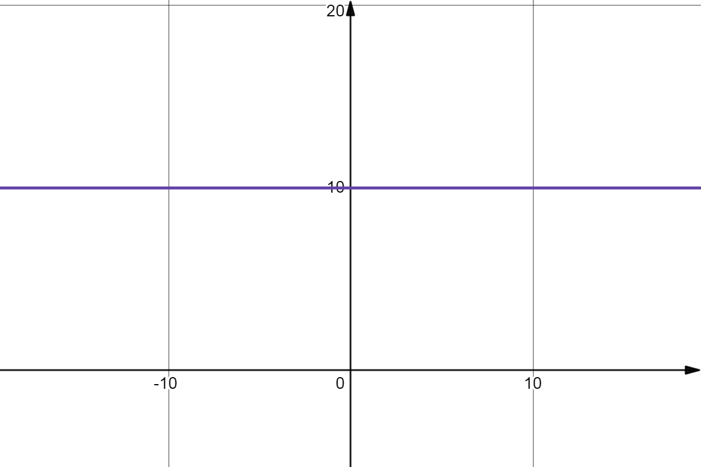
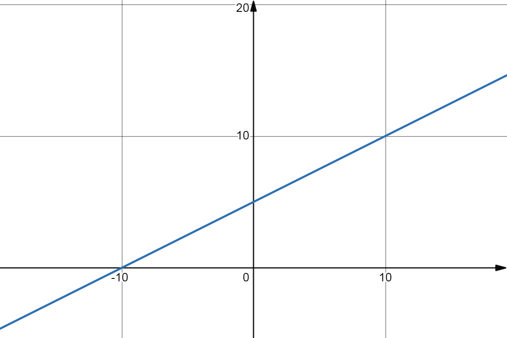
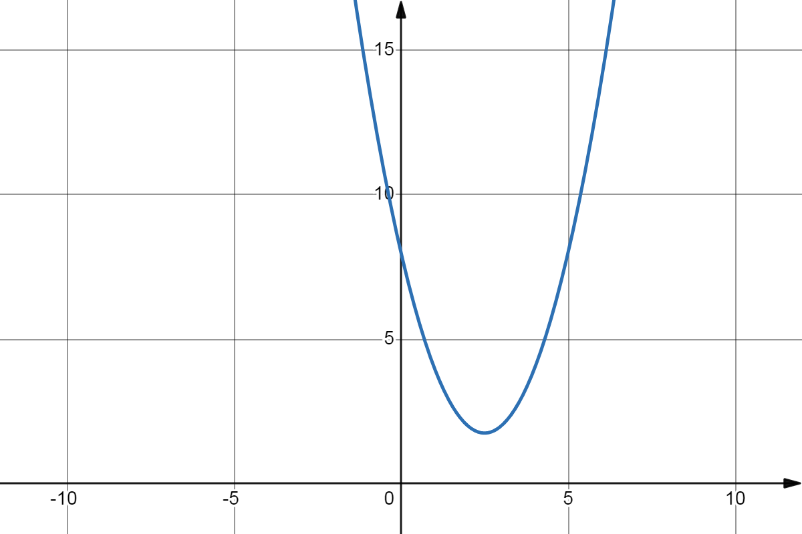
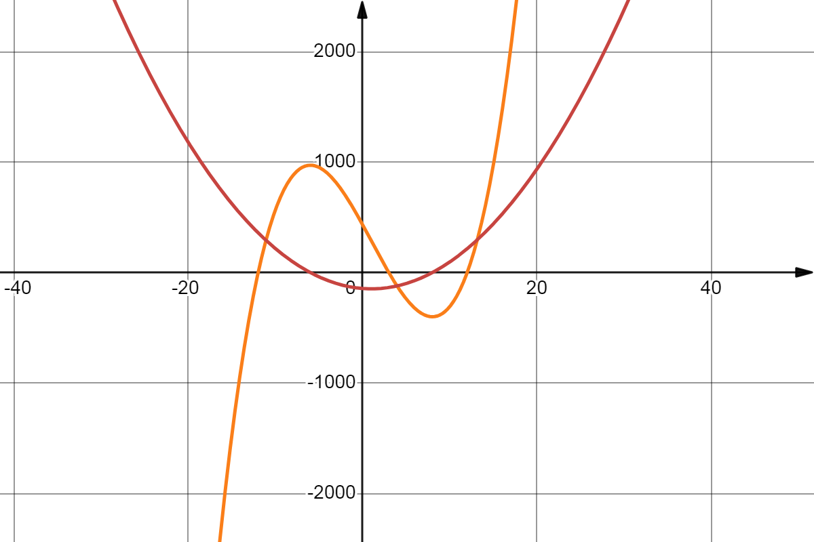

En mathématiques, une fonction polynomiale (parfois appelée fonction polynôme) est une
fonction obtenue en évaluant un polynôme.
Par abus de langage, on appelle parfois une fonction polynomiale un polynôme, confondant
ainsi la notion de fonction polynomiale avec celle de polynôme formel.
Fonctions polynomiales réelles ou complexes
Définitions
On considère le polynôme \(P\) de la forme :
$$
\quad P = \sum_{k=0}^{n} a_kX^k = a_nX^n + a_{n-1}X^{n-1} + \cdots + a_1X + a_0
$$
où les \(a_k\) sont des nombres réels ou des nombres complexes.
La fonction polynomiale \(f\) associée est alors définie par :
$$
\quad f(x) = \sum_{k=0}^{n} a_kx^k = a_nx^n + a_{n-1}x^{n-1} + \cdots + a_1x + a_0
$$
où la variable \(x\) peut être elle-même réel ou complexe.
Les fonctions polynomiales les plus courantes (avec \(a_n \neq 0\)) sont :
les fonctions constantes correspondant à \(n = 0\)
les fonctions affines correspondant à \(n = 1\)
les fonctions quadratiques (aussi appelées fonctions du second degré) correspondant à
\(n = 2\)
les fonctions cubiques correspondant à \(n = 3\)
Dans le cadre des fonctions polynomiales réelles ou complexes, on définit le degré d’une
fonction polynomiale comme le degré du polynôme auquel elle est associée (avec la convention
que le degré vaut \(-\infty\) si la fonction est nulle).
Puisqu’un polynôme réel ou complexe non constant de degré \(n\) a au plus \(n\) racines
d’après le théorème de d’Alembert-Gauss, on en déduit qu’une fonction polynomiale réelle ou
complexe non constante de degré \(n\) a au plus \(n\) zéros.
Autrement dit, deux fonctions polynomiales réelles ou complexes de degrés inférieurs ou
égaux à \(n\) et coïncidant sur plus de \(n\) points sont nécessairement identiques
(c’est-à-dire qu’elles ont même degré et mêmes coefficients).
Opérations
La somme, la différence et le produit de deux fonctions polynomiales est une fonction
polynomiale.
Le degré du produit de deux fonctions polynomiales est la somme des degrés de ces deux
fonctions.
Dérivées
La fonction polynomiale \(f\) réelle ou complexe est infiniment dérivable et la
kième dérivée de \(f\) est exactement la fonction polynomiale associée à la
kième dérivée formelle de \(P\). En particulier, les dérivées d’ordre \(k \gt n\)
de fonctions polynomiales de degré \(n\) sont identiquement nulles.
Cas où \(k \le n\) :
$$
\quad f^k(x) = \sum_{i=k}^{n} \frac{i!}{(i-k)!}a_ix^{i-k}
$$
Cas où \(k \gt n\) :
$$
\quad f^k(x) = 0
$$
Par exemple, la dérivée de \(f\) est donnée par :
$$
\quad f'(x) = na_nx^{n-1} + (n-1)a_{n-1}x^{n-2} + \cdots + 2a_2x + a_1
$$
Primitives
De même, les primitives de \(f\) sont exactement les fonctions polynomiales associées aux
primitives formelles de \(P\), c’est-à-dire de la forme :
$$
\quad x \mapsto \frac{a_{n}}{n+1}x^{n+1} + \frac{a_{n-1}}{n}x^{n} + \cdots
+ \frac {a_{1}}{2}x^{2} + a_{0}x + C
$$
où \(C\) est une constante réelle ou complexe arbitraire.
Fonction constante
Définition
Une fonction constante est une fonction qui ne prend qu’une seule valeur, indépendamment de
sa variable.
Propriétés
Une fonction polynomiale constante d’une variable réelle est représentée par une droite
parallèle à l’axe des abscisses.

Graphique de la fonction constante \(f(x) = 10 \).
La dérivée d’une fonction polynomiale constante est nulle.
Fonction affine
Définition
Les fonctions affines sont des fonctions polynomiales de degré inférieur ou égal à 1.
Une fonction affine est une fonction obtenue par addition et multiplication de la variable
par des constantes. Elle peut donc s’écrire sous la forme :
$$
\quad f(x) = ax + b
$$
où les paramètres \(a\) et \(b\) ne dépendent pas de \(x\).
Lorsque la fonction est définie sur l’ensemble des réels, elle est représentée par une
droite, dont \(a\) est la pente et \(b\) l’ordonnée à l’origine.
Propriété caractéristique
Une fonction affine \(f\) est caractérisée par le fait que son taux d’accroissement est
constant. C’est-à-dire qu’il y a proportionnalité entre les accroissement de \(x\) et les
accroissement de \(f(x)\). En effet, si \(x_1\) et \(x_2\) sont deux réels, l’accroissement
\(f(x_1)-f(x_2)=a(x_1-x_2)\) est proportionnel à \(x_1-x_2\). Le coefficient de
proportionnalité est \(a\).
Une fonction \(f\) est affine si et seulement si il existe \(a\) tel que pour tout réels
\(x_1\) et \(x_2\), \(f(x_1)-f(x_2)=a(x_1-x_2)\).
Cette propriété donne alors un outil pour déterminer le coefficient \(a\) :
$$
\quad a = \frac{ f(x_2) - f(x_1) }{ x_2 - x_1 }
$$
si \(x_1 \neq x_2\).
La dérivée d’une fonction affine est une fonction constante dont la valeur est le
coefficient multiplicateur ou coefficient de proportionnalité de
la fonction affine :
$$
\quad f'(x) = a
$$
L’ordonnée à l’origine \(b\) peut se calculer de la manière suivante :
$$
\quad b = \frac{ x_2f(x_1) - x_1f(x_2) }{ x_2 - x_1 }
$$
si \(x_1 \neq x_2\).
Si l’on connaît l’expression de \(f\), alors on a que \( b= f(0) \).
Résolution d’équations et d’inéquations
Supposons \(a\) et \(b\) réels et \(a\) non nul.
L’unique solution de l’équation \( ax+b=0 \) est le réel :
$$
\quad -\frac{b}{a}
$$
L’ensemble des solutions de l’inéquation \( ax+b\geq 0\) est l’intervalle
réel :
$$
\quad \left[ -\frac{b}{a}, +\infty \right[ \quad, a \gt 0
$$
ou bien
$$
\quad \left] -\infty , -\frac{b}{a} \right] \quad, a \lt 0
$$
Représentation graphique
La représentation graphique d’une fonction affine définie sur l’ensemble des réels est une
droite dont l’équation est :
$$
y = ax + b
$$

Graphique de la fonction affine \(f(x) = \frac{1}{2}x + 5 \).
La droite coupe l’axe des ordonnées pour \(y=b\) (d’où le nom d’ordonnée à l’origine).
Lorsque \(b\) est nul, la droite passe par l’origine du repère cartésien.
La droite a pour pente ou coefficient directeur le réel \(a\). Si \(a \gt 0\),
la fonction affine est croissante (la droite monte) et si \(a \lt 0\), elle est
décroissante (la droite descend).
Fonction quadratique
Définition
Une fonction quadratique est une fonction numérique définie par :
$$
\quad f : x \mapsto ax^{2}+bx+c
$$
où \(a\), \(b\) et \(c\) sont des nombres réels qui ne dépendent pas de la variable \(x\),
avec \( a \neq 0 \).
Différentes formes
Forme développée
La forme développée, réduite et ordonnée d’une fonction quadratique est :
$$
\quad f(x) = ax^{2}+bx+c
$$
avec \(a\) non nul.
Dans ce cas, les nombres \(a\), \(b\) et \(c\), suivant le vocabulaire des polynômes, sont
respectivement appelés coefficients du second degré, du premier degré et terme constant. Les
termes \(ax^2\), \(bx\) et \(c\) sont les monômes respectivement de degré 2, 1 et 0. Sous
cette forme constituée de trois monômes, la fonction est souvent appelée trinôme du second
degré.
Forme canonique
Toute fonction quadratique possède une forme réduite ou forme canonique, où la variable
\(x\) n’apparaît qu’une seule fois. Chacune des deux expressions suivantes peut être nommée
forme canonique, ces expressions ne diffèrent que par une factorisation par
\(a\) :
$$
\quad f(x) = a \left( x + \frac{b}{2a} \right)^{2} - \frac{b^2-4ac}{4a}
$$
$$
\quad f(x) = a \left[ \left( x + \frac{b}{2a} \right)^{2} - \frac{b^2-4ac}{4a^2} \right]
$$
Les nombres \( -\frac{b}{2a} \) et \( f\left(-\frac{b}{2a}\right)=-\frac{b^2-4ac}{4a}\)
correspondent respectivement à l’abscisse et l’ordonnée du sommet de la parabole
représentative du trinôme.
Le nombre \(b^2-4ac\), quant à lui, est appelé discriminant et souvent noté \(\Delta\).
Les formes canoniques sont particulièrement intéressantes car elles permettent d’écrire la
fonction du second degré comme une composée de fonctions affines avec la fonction carré. La
plupart des résultats sur la fonction (variations, symétrie, signe…) se démontrent grâce à
l’une ou l’autre des formes canoniques.
Forme factorisée
Une fonction quadratique peut s’écrire sous une forme factorisée
suivant la valeur du discriminant \(\Delta\).
Si \(\Delta \lt 0\) : la fonction n’est pas factorisable dans \(\mathbb{R}\).
Équation du second degré
Équation
Une équation du second degré est une équation équivalente à \(f(x)=0\), où \(f\) est une
fonction quadratique.
On dit qu’un nombre \(r\) est une racine de l’équation et de \(f\) si \(f(r)=0\).
On démontre, par application du théorème de l’équation produit-nul sur la forme factorisée,
que :
Si \(\Delta \gt 0\) alors \(f\) possède deux racines qui sont :
$$
\quad r_{1,2} = \frac{-b\pm\sqrt{\Delta}}{2a}
$$
Si \(\Delta = 0\) alors \(f\) possède une racine double qui est :
$$
\quad r_0 = \frac{-b}{2a}
$$
Si \(\Delta \lt 0\) alors \(f\) ne possède pas de racine dans l’ensemble \(\mathbb{R}\)
mais elle en possède deux dans l’ensemble \(\mathbb{C}\) :
$$
\quad \frac{-b \pm \mathrm{i}\sqrt{\left|\Delta\right|}}{2a}
$$
Opérations sur les racines
Si le polynôme du second degré possède deux racines \(r_1\) et \(r_2\) (éventuellement
confondues), il admet comme forme factorisée \( a(x-r_1)(x-r_2)\). Par développement de
cette forme et identification des termes de même degré avec la forme développée, on obtient
les égalités :
$$
\quad r_1 + r_2 = -\frac{b}{a}
$$
et
$$
\quad r_{1}r_{2} = \frac {c}{a}
$$
Représentation graphique
La représentation graphique d’une fonction quadratique est une parabole qui admet comme axe
de symétrie la droite d’équation \(x=\frac{-b}{2a}\).

Graphique de la fonction quadratique \(f(x) = x^2 -5x + 8 \).
Les variations et la forme de la parabole présentent deux cas, suivant le signe du
coefficient de second degré \(a\) :
Si \(a \gt 0\), la parabole admet un minimum ; la fonction est décroissante
sur l’intervalle \( \left] -\infty , \frac {-b}{2a} \right] \) puis croissante. Les
coordonnées du minimum sont \( \left( \frac{-b}{2a}, c-\frac{b^2}{4a} \right) \).
La parabole est tournée vers le haut. La fonction est convexe.
Si \(a \lt 0\), la parabole admet un maximum ; la fonction est croissante sur
l’intervalle \( \left] -\infty , \frac {-b}{2a} \right] \) puis décroissante. Les
coordonnées du maximum sont \( \left( \frac{-b}{2a}, c-\frac{b^2}{4a} \right) \).
La parabole est tournée vers le bas. La fonction est concave.
La valeur absolue du nombre \(a\) donne également la vitesse de variation de la fonction
quadratique. Ainsi, plus \(a\) est proche de zéro, plus la parabole va paraître
aplatie, pour un repère donné.
Pour l’intersection de la parabole avec l’axe des abscisses, un autre nombre joue un rôle
central, le discriminant \(\Delta\) :
Si \(\Delta \lt 0\), la parabole n’a aucun point d’intersection avec l’axe des
abscisses.
Si \(\Delta = 0\), la parabole est tangente en un point avec l’axe des abscisses.
Si \(\Delta \gt 0\), la parabole possède deux points d’intersection avec l’axe des
abscisses.
Analyse
Toute fonction quadratique est continue, ce qui signifie qu’elle n’admet pas de
cassure : à une variation infinitésimale de la variable \(x\) correspond une
variation infinitésimale de la fonction, pour tout nombre réel \(x\).
De plus, elle est indéfiniment dérivable : toute fonction \(f\) de la forme
\(f(x)=ax^2+bx+c\) admet :
une dérivée \(f'(x)=2ax+b\)
une dérivée seconde \(f''(x)=2a\)
des dérivées successives (dérivée troisième, quatrième, etc.) toutes nulles
Du point de vue de leurs variations, les fonctions quadratiques peuvent être classées en
deux groupes, suivant le signe du coefficient de second degré \(a\) :
Si \(a \gt 0\), la fonction est strictement décroissante puis strictement croissante
et atteint son minimum en \(\frac {-b}{2a}\).
Si \(a \lt 0\), la fonction est strictement croissante puis strictement décroissante
et atteint son maximum en \(\frac {-b}{2a}\).
Dans les deux cas, les coordonnées de l’extremum sont donc
\( \left( \frac{-b}{2a}, c-\frac{b^2}{4a} \right) \).
Ce résultat peut être démontré par l’étude du signe de la dérivée de \(f\), en utilisant le
fait qu’une fonction dérivable est strictement croissante sur tout intervalle où sa dérivée
est strictement positive et strictement décroissante sur tout intervalle où sa dérivée est
strictement négative. La convexité de \(a\) (ou sa concavité lorsque \(a \lt 0\)) se
démontre également par les dérivées. En effet, toute fonction dont la dérivée seconde est
positive est convexe, et toute fonction dont la dérivée seconde est négative est concave.
Les primitives de la fonction \(f(x)=ax^2+bx+c\) sont les fonctions du troisième degré de la
forme \( G_{k}(x)= \frac{1}{3}ax^3+\frac{1}{2}bx^2+cx+k \), où \(k\) est une constante.
Fonction cubique
Définition
Une fonction cubique est une fonction numérique définie par :
$$
\quad f : x \mapsto ax^{3}+bx^{2}+cx+d
$$
où \(a\), \(b\), \(c\) et \(d\) sont des nombres réels qui ne dépendent pas de la variable
\(x\), avec \( a \neq 0 \).
Points critiques
Les points critiques de \(f\) sont les abscisses des points du graphe où la pente de la
tangente est nulle, c’est-à-dire les \(x\) en lesquels la dérivée de \(f\)
s’annule :
$$
\quad 3ax^2+2bx+c=0
$$
Les solutions de cette équation sont données, en utilisant la formule quadratique avec
discriminant réduit :
$$
\quad x_{critique}=\frac{-b \pm \sqrt{\Delta_0} }{3a}
$$
avec
$$
\quad \Delta_0=b^2-3ac
$$
Le signe de \(\Delta_0\) détermine le nombre de points critiques et d’extrema locaux de
\(f\) :
Si \(\Delta_0 \gt 0\), alors \(f\) a un maximum local et un minimum local
Si \(\Delta_0 = 0\), alors le point d’inflexion (voir ci-dessous) est le seul point
critique
Si \(\Delta_0 \lt 0\), alors \(f\) n’a pas de point critique
Dans les cas où \(\Delta_0 \leq 0\), \(f\) est strictement monotone donc n’a pas d’extremum
local.

Graphique de la fonction cubique \(f(x) = x^3 - x^2 -144x + 432 \)
et sa dérivée.
Point d’inflexion et symétrie
La courbe d’une fonction cubique a toujours un point d’inflexion, c’est-à-dire un point où
la courbe change de concavité.
Puisque la dérivée seconde de \(f\) s’exprime par \(f''(x)=6ax+ 2b\), l’abscisse de ce point
est :
$$
\quad x_0 =-\frac{b}{3a}
$$
L’ordonnée est :
$$
\quad y_0 = f(x_0) = \frac{2b^3}{27a^2} - \frac{bc}{3a} + d
$$